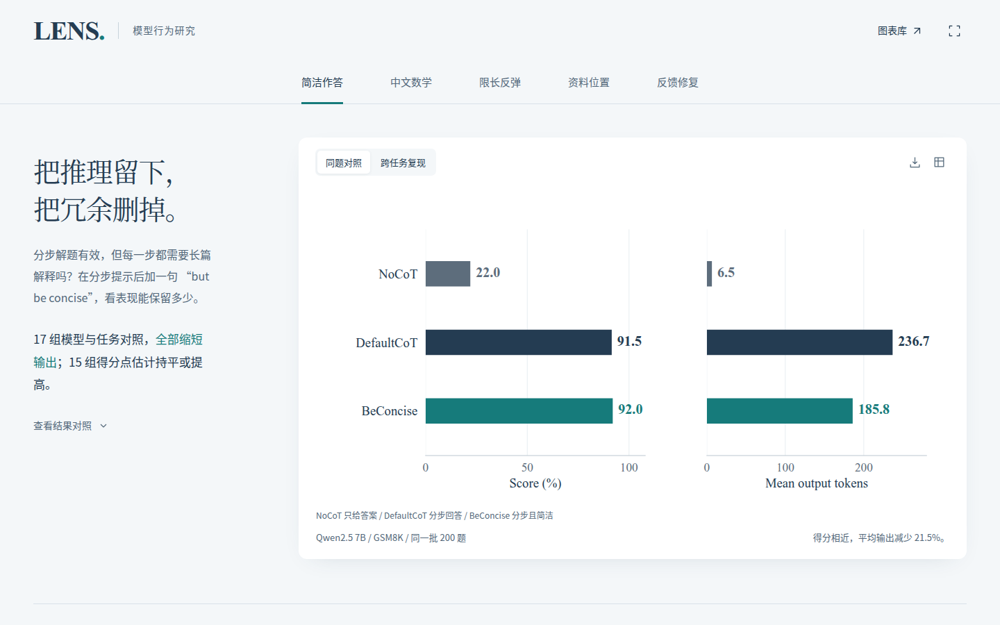
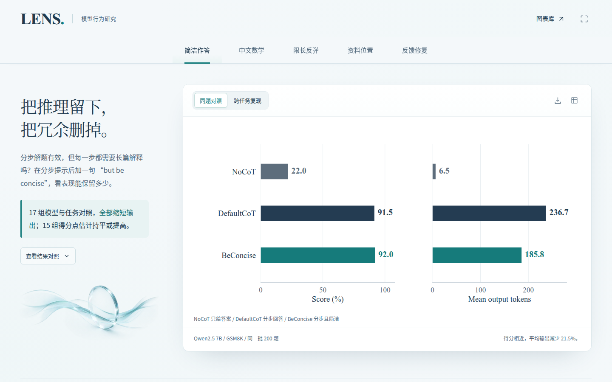
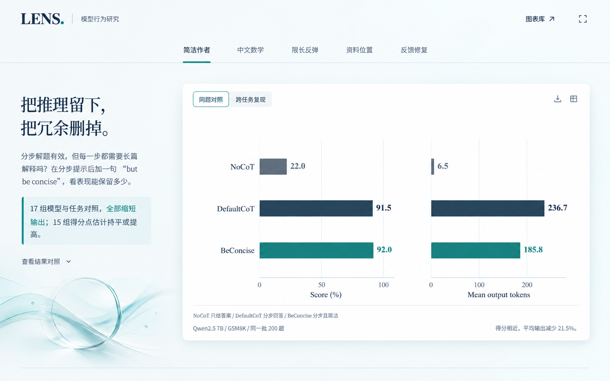
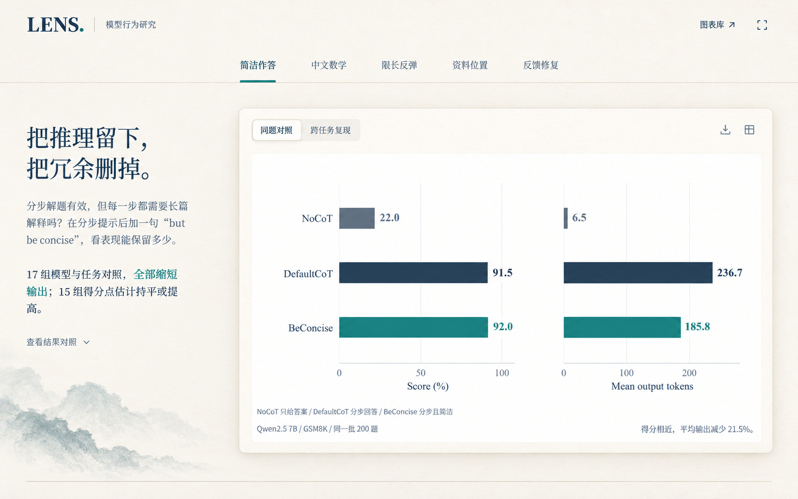
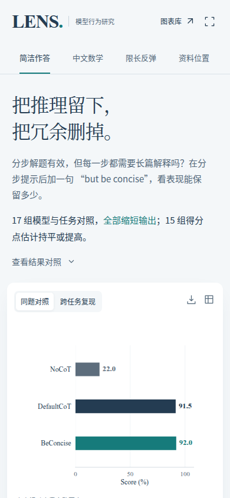
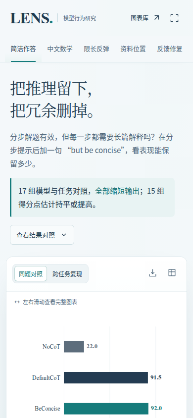

LENS 首页视觉 Pilot
原始网页 → 两份真实生图参考 → 独立素材 → 原生前端实现 → 浏览器截图与回归检查。
此页面仅整理本地优化成果。独立工作分支；未推送远程、未更新线上网站。设计图为模型生成，最终实现保留原文与原生数据图。
原始网页与最终实现 · 1440 × 900




两份生图参考




移动端 · 390 × 844




独立生成的装饰素材

素材没有承载研究文字或数据。手机端不显示也不请求该装饰素材；表单、按钮、文字与数据图均由前端代码呈现。